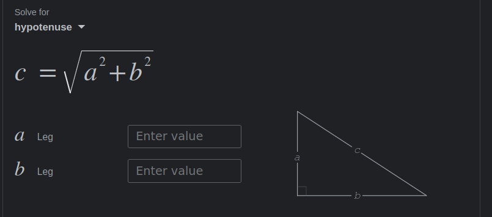
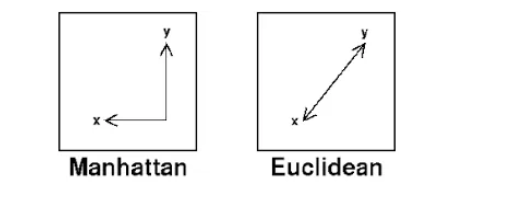

def hello():
print('hello world')Functions
A function is a body of code that does something we need done, typically repeatedly
hello()hello worldArguments
def hello(message):
print(message)hello('hello there world')hello there worldhello('serge')sergemessage = 'serge'
print(message)sergehello('serge')sergehello('i am having fun')i am having funReturns
def hello(message):
print(message)
return len(message)hello('serge')serge5len('serge')5hello(42)42TypeError: object of type 'int' has no len()len(10)TypeError: object of type 'int' has no len()hello('42')422“Real functions”

p3 = [0, 0]
p1 = [0, 5]
p2 = [10, 0]# distance between p1 and p2
b = p2[0] - p3[0]
b10a = p1[1] - p3[1]
a5# c = sqrt(a**2 + b**2)a**225b**2100(a**2 + b**2)125(a**2 + b**2)**(1/2)11.180339887498949def distance(pnt1, pnt2):
dx = pnt1[0] - pnt2[0]
dy = pnt1[1] - pnt2[1]
return (dx**2 + dy**2)**(1/2)p3 = [0, 0]
p1 = [0, 5]
p2 = [10, 0]distance(p1, p3)5.0distance(p2, p3)10.0distance(p2, p1)11.180339887498949distance(p1, p1)0.0
import numpy
def manhattan(pnt1, pnt2):
dx = pnt1[0] - pnt2[0]
dy = pnt1[1] - pnt2[1]
adx = numpy.abs(dx)
ady = numpy.abs(dy)
return adx + ady
p3 = [0, 0]
p1 = [0, 5]
p2 = [10, 0]manhattan(p3, p2)10manhattan(p3, p1)5manhattan(p2, p1)15distance(p2, p1)11.180339887498949def euclidean(pnt1, pnt2):
dx = pnt1[0] - pnt2[0]
dy = pnt1[1] - pnt2[1]
return (dx**2 + dy**2)**(1/2)import numpy
def manhattan(pnt1, pnt2):
dx = pnt1[0] - pnt2[0]
dy = pnt1[1] - pnt2[1]
adx = numpy.abs(dx)
ady = numpy.abs(dy)
return adx + ady
euclidean(p2, p1)11.180339887498949manhattan(p2, p1)15manhattan(p1, p2)15euclidean(p1, p2)11.180339887498949Composition
def distance_composite(pnt1, pnt2, metric='euclidean'):
if metric == 'euclidean':
return euclidean(pnt1, pnt2)
else:
return manhattan(pnt1, pnt2)distance_composite(p1, p2, metric='euclidean')11.180339887498949distance_composite(p1, p2, metric='manhattan')15All-in-one function
def distance(pnt1, pnt2, metric='euclidean'):
dx = pnt1[0] - pnt2[0]
dy = pnt1[1] - pnt2[1]
if metric == 'euclidean':
return (dx**2 + dy**2)**(1/2)
else:
adx = numpy.abs(dx)
ady = numpy.abs(dy)
return adx + ady
distance(p1, p2, metric='manhattan')15distance(p1, p2, metric='euclidean')11.180339887498949distance(p1, p2)11.180339887498949